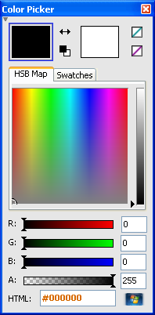

There is a separate dialog which helps you choose the desired color for painting. This can be shown or hidden using View | Color Picker. You can also make it compact and revert it by clicking the small triangle at the top left corner, if you think that it occupies too much room.
 The two filled rectangles on the top indicate the foreground and background colors, respectively. Click on the first rectangle to set the foreground and on the other to set the background color. The colors can be swapped and reset using the buttons between them.
You can define a color by giving its RGBA coordinates or HTML representation, or using the HSB Map, which appears to be closer to human perception than the RGB system. In addition, you can find two tool buttons at the top right corner, which are shortcuts to the transparent and inverted colors.
When working with 16-color or other indexed images, i.e. you want to use only the 16 pre-defined system colors, you should use the Swatches tab. You can select color swatches with the left mouse button and overwrite them with the current color using the right mouse button. Swatch presets can be loaded from and saved to files.